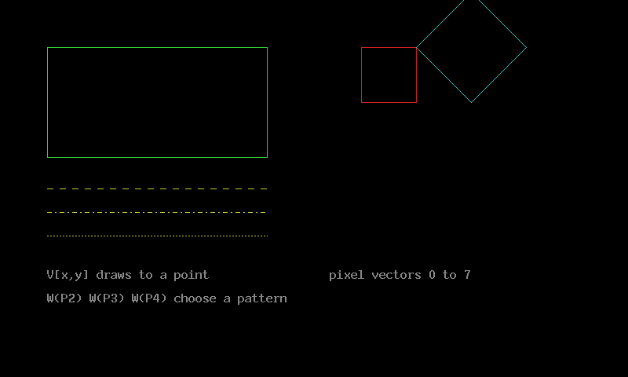
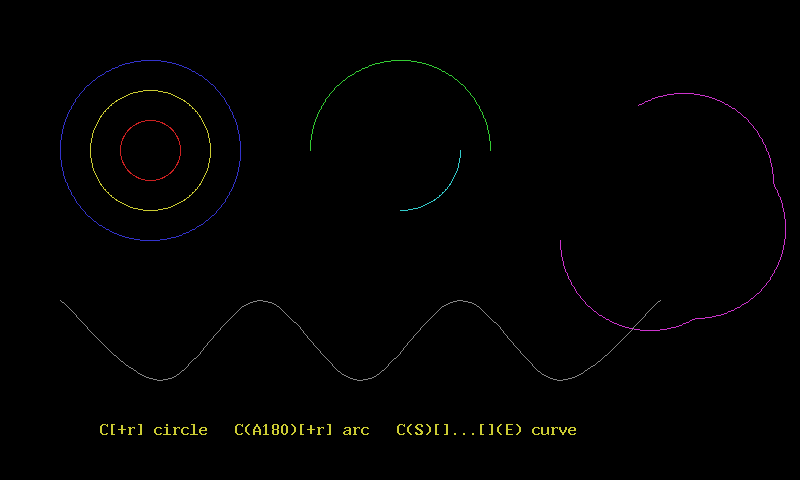
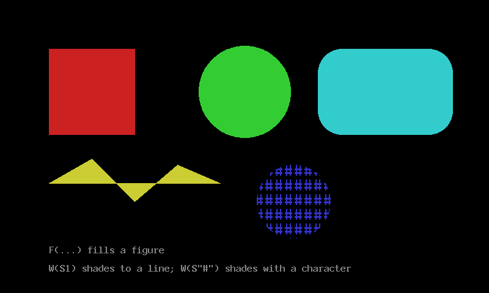
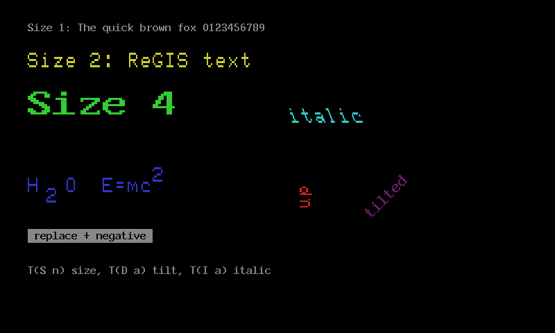
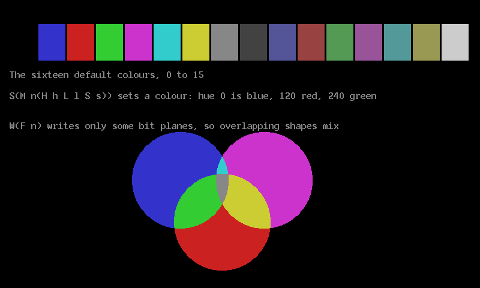
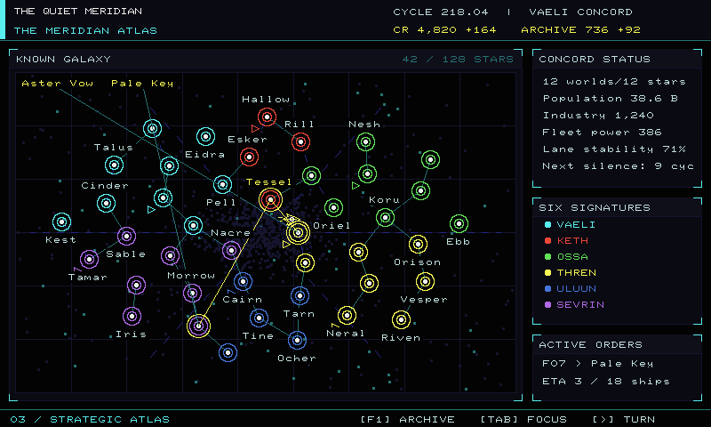
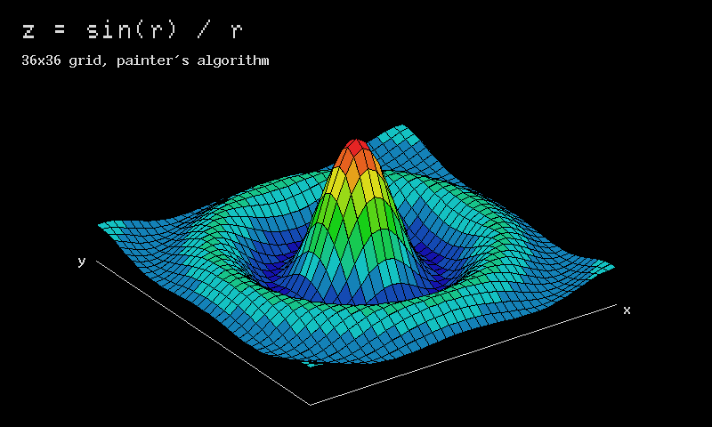

neoteletext-renderer-regis: a guide
A renderer for DEC ReGIS, the vector graphics language of the VT340 terminal. This guide shows how to draw with ReGIS, how to call the library from Rust, and how to use the command-line tool.
What it is
ReGIS (Remote Graphics Instruction Set) is a text language. A program sends short commands such as P[100,100]V[200,200] and the terminal draws them. The renderer plays the part of the terminal: it reads the commands and produces the picture.
- The screen is 800 by 480 pixels with sixteen colours, as on a VT340.
- The library,
regis, is written from scratch in Rust. It uses no other crate, needs no operating system (no_stdwithalloc), does no input or output, and uses no floating point, so the same bytes give the same pixels everywhere. - The tool,
regis-render, turns a ReGIS file into a PNG or PPM picture. - It follows the VT330/VT340 Programmer Reference Manual, Volume 2, and is checked against screen captures from a real VT340.
The command-line tool
cargo build --release
target/release/regis-render picture.regis picture.png| Argument | Meaning |
|---|---|
--font FILE | The shapes of the built-in characters, in place of the VT340 font compiled into the tool. |
--page 0|1 | Write this graphics page instead of the one the stream left on show. |
--macrograph-reports | Let R(M(letter)) report a macrograph's contents (off otherwise). |
--frames TICKS | Play the picture's animation for this many ticks of a sixtieth of a second, 1 to 36,000, from tick 0, and write a sequence of images instead of one (see animation). |
--frame-step K | With --frames: write an image every K ticks (1 if not given), and always the last. |
--script FILE | With --frames: a text file of timed operations on numbered drawings, one a line; - reads standard input. |
INPUT | A file of ReGIS. If it holds a device control string (ESC P p … ESC \) it is read as a terminal would read it; otherwise the whole file is taken as commands. |
OUTPUT | A name ending .ppm writes a binary PPM; anything else writes a PNG. With --frames each image is named with its tick in five digits before the extension: out.png gives out-00000.png, out-00006.png and so on. |
Replies the stream asks for (see events) are printed on standard error. The PNG is not compressed; tools/compress_png.py shrinks one in place.
Drawing with ReGIS
Each command is a letter followed by arguments. Positions are written in brackets, options in parentheses, text in quotes. Letters may be in either case, and spaces and line breaks between items mean nothing. [0,0] is the top-left corner and y grows downward.
Lines
P moves without drawing; V draws a line to each position given. A position can be absolute [200,100], relative [+50,-20], or leave a coordinate out to keep it. A digit from 0 to 7 outside brackets is a pixel vector: one step in one of eight directions, 0 to the right and counting counterclockwise.
W(I3) P[60,60] V[340,60][340,200][60,200][60,60]
W(I6,P2) P[60,240] V[340,240]
W(I2) P[460,130] V(W(M70)) 0246
Circles, arcs and curves
C[+90] draws a circle about the current position through the point given. C(A180)[+90] draws an arc of 180 degrees, counterclockwise for a positive angle. C(C) means the bracket gives the centre instead. C(S)…(E) draws a smooth open curve through points, and C(B)…(E) a closed one.

Filling and shading
F(…) fills the figure that the vector and curve commands inside it trace. W(S1) switches shading on: everything drawn is filled down (or up) to a reference line. W(S'#') shades with a character.
W(I2) P[80,80] F(V(B)[+140][,+140][-140](E))
W(I3) P[400,150] F(C[+75])
W(I6) P[80,300] W(S1) V[150,260][220,330][290,270][360,300] W(S0)
Text
T'string' draws text with its top-left corner at the current position. T(S2) picks one of seventeen sizes, T(D90) tilts the string in steps of 45 degrees, T(I22) slants it, and a pixel-vector digit between strings shifts by half a character for subscripts and superscripts.

Colour
A pixel holds a number from 0 to 15, and the output map gives each number its colour. W(I5) draws in colour 5; S(I0) sets the background; S(M5(H120L50S100)) changes what colour 5 looks like, for everything already drawn in it too. Hues follow DEC's wheel: 0 is blue, 120 red, 240 green.

Bigger pictures


Run docs/examples/build.sh to render every example again.
Using the library
use regis::{Event, Font, Screen, Terminal};
let mut screen = Screen::new(); // two pages of 800 x 480, owned by you
let mut terminal = Terminal::new(); // everything else ReGIS remembers
terminal.set_font(Font::parse(&std::fs::read_to_string("fonts/vt340.regisfont")?)?);
// Feed bytes as they arrive, in pieces of any size.
for event in terminal.feed(&mut screen, b"\x1bPpP[100,100]V[200,200]\x1b\\") {
match event {
Event::Wait(ticks) => { /* the stream asked for a pause: 60 ticks to the second */ }
Event::Reply(bytes) => { /* an answer for the sender of the stream */ }
Event::LocatorRequest => { /* the stream asked where the pointer is */ }
Event::LimitReached => { /* some input was not drawn */ }
_ => { /* the enum may grow */ }
}
}
terminal.finish(&mut screen); // at the end of the input
let page = screen.displayed(); // &Canvas
let colours = terminal.palette().colours(); // [[u8; 3]; 16]
for (index, pixel) in page.pixels().iter().enumerate() {
let [red, green, blue] = colours[usize::from(*pixel)];
// index % 800 is x, index / 800 is y
}| Call | What it does |
|---|---|
Terminal::feed | Reads a terminal data stream: ReGIS is taken from device control strings and everything else is ignored. |
Terminal::feed_regis | Reads bare ReGIS commands, with no control string around them. |
Terminal::finish | Ends the input, so a number or string waiting for its last byte is acted on. |
Terminal::set_font | Supplies the built-in characters. The library compiles none in. |
Terminal::recognise_eight_bit_controls | Also obey the single bytes 0x90 and 0x9C as the start and end of a control string. Leave it off for UTF-8 streams. |
Terminal::allow_macrograph_reports | Let a stream read back the macrographs it defined. |
Terminal::palette | The sixteen colours, to turn pixel values into red, green and blue. |
Terminal::position, cursor_visible | Where the graphics cursor is and whether the stream switched it on; the library does not draw it. |
Screen::displayed, page | The page on show, or either page by number. |
Canvas::pixels, pixel | The pixels, one byte each from 0 to 15, row by row from the top-left. |
A terminal keeps its state between calls, as a real one does between control strings: position, colours, macrographs and loaded characters all carry on. Use a new Terminal and Screen for each unrelated picture.
Events
The library never waits and never sends anything. It tells the caller what the stream asked for:
Waitcomes fromS(T n). Treat it as advice: a stream can ask for a minute, plus one tick for each byte it sends, and a caller showing pictures to a user should set its own ceiling.Replyis the answer to a report command such asR(P). Send it only to the program that produced the stream, never to anything that would treat it as typed input. Replies never outweigh the input by more than 4,096 bytes.LimitReachedmeans a bound in the limits stopped some drawing. The terminal stays usable.
Numbered drawings and animation
ReGIS v2 adds one command, D, which keeps a drawing under a number so that it can be moved, hidden, replaced and reused; regis-v2.md defines it. The numbered drawings are not drawn on the Screen: Terminal::compose paints them over a copy of it, into a Picture the caller keeps, and repaints only what changed since the picture was last composed.
A receiver animates numbered drawings itself, with no byte of ReGIS arriving:
| Call | Purpose |
|---|---|
Terminal::set_animation(number, state) | Gives a drawing an AnimationState: a position, shown or hidden, a layer, an order, a frame and a forced look, each used in place of what the stream committed. At most 64 drawings hold one. It returns false when the state was not kept as given. |
Terminal::clear_animation(number) | Forgets it: the drawing is painted as committed. |
Terminal::animation(number) | The state held. A commit that sets the same attribute writes over a part of it, and a deletion over all of it. |
Terminal::drawing_position(number) | The position in force, which a relative move adds to. |
Terminal::committed_drawing(number) | What the stream committed for the drawing, apart from the animation state: shown (V), layer (G) and depth order (L). Nothing when the drawing does not exist. |
Terminal::label(number), Terminal::labels(), Terminal::title() | The committed label of a drawing (U), every labelled drawing with its label, and the picture's title (D(T'...')). Never drawn: they are for a screen reader and for page lists. Validator has the same three. |
Terminal::visible_drawing() | The lowest-numbered top-level drawing that is shown and reaches the screen, or nothing. Validator has the same two calls, and Validator::base_work(), the work spent drawing outside numbered drawings: a server asks after feeding a sprite sheet, which must leave no drawing visible and draw nothing on the base picture. |
Terminal::bounds(number) | The drawing's bounding Rectangle on the screen, for collision and region tests; None while it is not shown. |
Terminal::advance_ticks(ticks) | Says that ticks of a sixtieth of a second have passed. Drawings with a paint rate (T) are painted that much further at the next compose. True while anything is still being painted. |
use regis::{AnimationState, Picture, Screen, Terminal};
let mut screen = Screen::new();
let mut terminal = Terminal::new();
// Drawing 2: a square on the sprites layer. Drawing 1: the background.
let _ = terminal.feed_regis(&mut screen, b"D(B1)F(V[0,0][799,0][799,479][0,479])D(E)D(S1(G0))");
let _ = terminal.feed_regis(&mut screen, b"D(B2)W(I3)F(V[0,0][19,0][19,19][0,19])D(E)D(S2(G2,X100,Y50),C)");
let mut picture = Picture::new();
terminal.compose(&screen, &mut picture);
// Move it: only the two small rectangles are repainted.
let moved = AnimationState { position: Some((300, 200)), ..AnimationState::default() };
assert!(terminal.set_animation(2, moved));
terminal.compose(&screen, &mut picture);
assert_eq!(picture.canvas().pixel(305, 205), Some(3));- Layers. A top-level drawing is in layer 0 (background), 1 (scene, the default), 2 (sprites) or 3 (overlay), by its attribute
G. Put what never moves inG0: it is kept painted, and a drawing moving above it replays none of it. - Frames.
D(S40(F(41,42,43,44)))gives drawing 40 four frames, each a drawing; the state'sframechooses which is drawn. The renderer has no clock: to cycle, the caller sets the frame each tick. - Looks.
H,AandNname the hover, pressed and alternative looks. The state'slookforces one whatever the pointer does. - Labels and a title.
D(S10(I1,U'Next page'),T'Harbour webcam',C)gives the button drawn by drawing 10 the words a screen reader speaks for it, and the picture the name a page list shows. Neither is drawn. Each is at most 64 bytes of plain text in a quoted string; the bytes are read as ISO/IEC 8859-1. - Paint rate.
D(S7(T50))paints drawing 7 at 5,000 work units a second, about that many pixels of line: it appears as it is drawn. Its children wait for it.
The tool plays all of this into images, the same on every run, for tests and golden files:
target/release/regis-render --frames 60 --frame-step 6 --script docs/examples/animation.script \
docs/examples/animation.regis frames/animation.pngEach line of a script is <tick> <operation> <drawing> …, in ascending tick; a line that begins with # is a comment.
| Operation | Effect |
|---|---|
move n x y [relative] | Sets the position, or adds to the position in force. |
show n, hide n | Shows or hides the drawing. |
look n 0|1|2|3 | Forces no look, the hover look, the pressed look or the alternative look. |
order n layer|keep order | Sets the layer, 0 to 3, or keeps it, and the order, −128 to 127. |
frame n f | Sets the frame, 0 to 15, and stops a cycle. |
cycle n first last period [once] | From the next tick, steps the frame from first to last every period ticks (1 to 3,600), round and round or once. At most 16 drawings cycle at once. |
stop_cycle n | Stops the cycle; the frame stays. |
reset n | Forgets the drawing's whole animation state. |
An operation on a drawing that does not exist does nothing and is counted; the count is printed on standard error. regis-minify copies D commands as written and checks its result against the composed picture and its pick record, with every drawing painted to its end, and against the labels and title it commits.
Fonts
The manual does not give the shapes of the VT340's characters, so the caller supplies them as text. The repository ships two fonts and one loadable set:
| File | What it is |
|---|---|
fonts/vt340.regisfont | Read from the VT340's character generator ROM by tools/rom_to_regisfont.py: its own ReGIS characters for 0x20–0x7E, both strikes, and for 0xA0–0xFF its text characters less their first and last columns, which is how the terminal draws them in ReGIS. The tests and regis-render use this one. |
fonts/vwsvt0.regisfont | DEC's VWSVT0 terminal font, narrowed to eight pixels by tools/bdf_to_regisfont.py. Close to the VT340's shapes but not the same. |
fonts/loadable/greek.regis | A Greek alphabet as ReGIS load commands for set 1. Send it in the stream, then select it with T(A1). |
A font file holds one or two strikes:
# a comment
[strike 20]
41 00 00 00 00 18 3C 66 66 66 7E 66 66 66 66 66 00 00 00 00 00
[strike 10]
41 00 18 3C 66 7E 66 66 66 00 00Each glyph line is the character's code and then one byte for each row, top first, all in two-digit hexadecimal; the left pixel is the high bit. The ten-row strike is the stored cell the manual describes. The twenty-row strike is used when the text cell's height is a multiple of twenty, because a VT340 draws size-1 text from twenty distinct rows.
Safety
ReGIS arrives from a network, so the library treats it as hostile:
- It cannot panic on input: indexing, unwrapping and unchecked arithmetic are denied by the compiler settings, and thousands of random pages are fed to it by the tests.
- Its work is bounded. Every pixel visited is paid for from an allowance that grows with the bytes received, so a short stream cannot buy unbounded drawing, and the result is the same however the stream is divided between calls.
- Its memory is bounded: every buffer has a limit in
regis::limits. - Reports that could leak or inject (macrograph contents, character-set names) are off or cleaned, and the 8-bit control bytes that occur inside UTF-8 text are not obeyed unless asked for.
The issues found and fixed are written up in SOLVEDSECURITYISSUES/.
Working on it
scripts/check.sh commit # formatting, lint lists, Clippy
scripts/check.sh push # plus every test
scripts/check.sh full # plus docs, release tests, the long random run, the font checkThe tests in crates/regis/tests are grouped by command, with hardware.rs comparing against VT340 captures, streaming.rs checking that a stream may be cut anywhere, robustness.rs feeding hostile input, and security.rs holding a regression test for each solved issue.